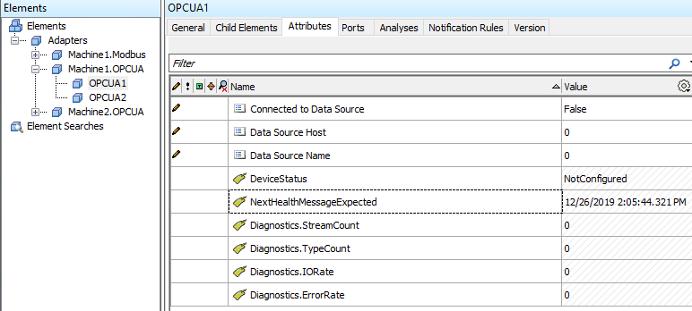

Adapter health
OSIsoft adapters produce different kinds of health data, which can be egressed to different health endpoints. For details, see the following sections.
Available health data
Dynamic data is sent every minute to configured health endpoints.
The following health data are available:
Health endpoint differences
Two following two OMF endpoints are currently supported for adapter health data:
- PI Web API
- OSIsoft Cloud Services
There are a few differences in how these two systems treat the associated health data.
PI Web API parses the information and sends it configured PI Systems for the OMF endpoint. The static data is used to create a hierarchy on a PI AF server similar to the following:

The dynamic health data is actually time-series data that is stored in PI points on a PI Data Archive and can be seen in the AF hierarchy as PI Point Data Reference attributes.
OSIsoft Cloud Services currently does not have a way to store the static metadata. For OCS-based adapter health endpoints, only the dynamic data will be stored. Each value will be its own stream with the timestamp property as the single index.